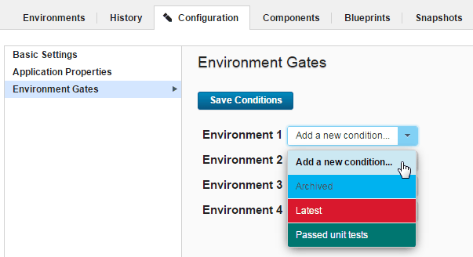
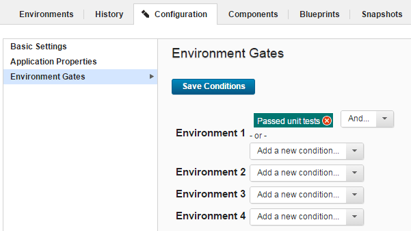

Creating environment gates
To create an environment gate, specify the conditions that must be met before component versions can be deployed to the environment.
Create one or more component version statuses. To see available statuses, click Settings > Statuses and then under Version Statuses, click Add Status.
-
Display the Environment Gates pane for the target application or application template (Applications > selected application > Configuration > Environment Gates or Applications > Templates > selected application template > Configuration > Environment Gates). This pane lists the environments and the gates for each environment.
Note: You cannot modify environment gates if the environment was created by using an application template.
-
Next to an environment, select a value from the Add a new condition list.

The available statuses are defined in the default.xml file. You supply your own status values.
Selecting a value provides both
AndandOrselection boxes.
Using the And box adds another value to the condition that must be satisfied. For example, if you define a gate with the conditions
Passed unit testsandLatest, only component versions with both of these statuses can be deployed into the environment.Using the Or box adds another condition to the gate. Additional conditions are defined in the same way as the first one. A gate with two or more conditions means that the component version can be deployed if it meets any of the conditions. For example, if you define a gate with the conditions
Passed unit testsandLatest, a component version passes the gate if it has either status (or both). A single gate can have any number of conditions. -
Repeat these steps for other environments.Each environment can have different gates.
- Click Save Conditions to save your changes.
Component versions cannot be deployed to the environments unless they have the specified statuses. To assign statuses to component versions, see Statuses.
- Environment gates
An environment gate is a requirement that must be met before component versions can be deployed to an environment. For example, a component version might need to pass certain tests or receive an approval.
Parent topic: Application environments